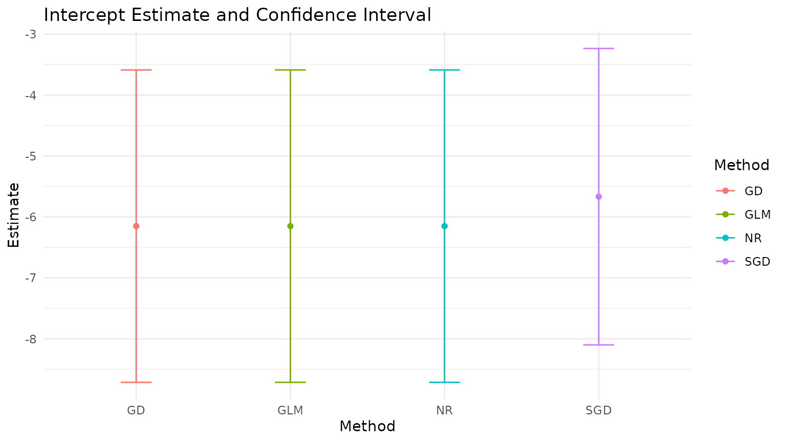
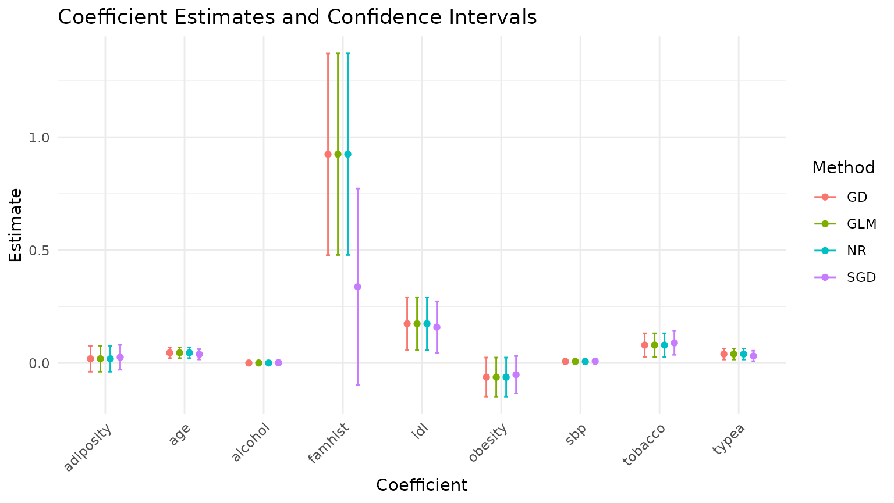

Homework 3: Optimization Methods for Logistic Regression
homework3.RmdFirst fitting the models, then plotting the coefficients and confidence intervals.
set.seed(537832)
data <- read.csv(system.file("SAheart.csv",
package = "STATS230"),
row.names = 1)
data$famhist <- ifelse(data$famhist == "Present", 1, 0)
fit_gd <- fit_logistic(
chd ~ .,
data = data,
method = "gd",
learning_rate = 0.05,
max_iterations = 5000
)
fit_sgd <- fit_logistic(
chd ~ .,
data = data,
method = "sgd",
learning_rate = 0.05,
decay = 0.01,
max_iterations = 5000,
convergence_metric = "beta"
)
#> Warning in run_optimizer_loop(beta0, update_sgd, max_iterations, verbose_every
#> = 100 * : maximum iterations reached without convergence
fit_nr <- fit_logistic(
chd ~ .,
data = data,
method = "nr"
)
fit_glm <- glm(
chd ~ .,
data = data,
family = binomial(link = "logit")
)
fit_gd$coefficients
#> (Intercept) sbp tobacco ldl adiposity
#> -6.1510232498 0.0065029704 0.0793671742 0.1739390350 0.0185496792
#> famhist typea obesity alcohol age
#> 0.9248621934 0.0395921362 -0.0628573513 0.0001229024 0.0452351873
fit_sgd$coefficients
#> (Intercept) sbp tobacco ldl adiposity famhist
#> -5.667386282 0.008033983 0.088940137 0.158799463 0.025292286 0.337566600
#> typea obesity alcohol age
#> 0.031029866 -0.051918055 0.001306498 0.038473613
fit_nr$coefficients
#> (Intercept) sbp tobacco ldl adiposity
#> -6.1507208646 0.0065040171 0.0793764457 0.1739238981 0.0185865682
#> famhist typea obesity alcohol age
#> 0.9253704193 0.0395950250 -0.0629098693 0.0001216624 0.0452253496
coef(fit_glm)
#> (Intercept) sbp tobacco ldl adiposity
#> -6.1507208650 0.0065040171 0.0793764457 0.1739238981 0.0185865682
#> famhist typea obesity alcohol age
#> 0.9253704194 0.0395950250 -0.0629098693 0.0001216624 0.0452253496
# get coefs
coef_gd <- fit_gd$coefficients
coef_sgd <- fit_sgd$coefficients
coef_nr <- fit_nr$coefficients
coef_glm <- coef(fit_glm)
# get CIs
ci_gd <- fit_gd$conf_int
ci_sgd <- fit_sgd$conf_int
ci_nr <- fit_nr$conf_int
ci_glm <- confint.default(fit_glm)
# combine into df for plotting (one row per coefficient per method)
coef_names <- names(coef_gd)
results <- data.frame(
Method = rep(c("GD", "SGD", "NR", "GLM"), each = length(coef_names)),
Coefficient = rep(coef_names, times = 4),
Estimate = c(coef_gd, coef_sgd, coef_nr, coef_glm),
CI_Low = c(ci_gd[, 1], ci_sgd[, 1], ci_nr[, 1], ci_glm[, 1]),
CI_High = c(ci_gd[, 2], ci_sgd[, 2], ci_nr[, 2], ci_glm[, 2])
)
# split intercept vs others because the scales are pretty different
intercept_name <- "(Intercept)"
results_intercept <- subset(results, Coefficient == intercept_name)
results_other <- subset(results, Coefficient != intercept_name)
# plot 1: intercept only
ggplot(results_intercept, aes(x = Method, y = Estimate, color = Method)) +
geom_point(position = position_dodge(width = 0.5)) +
geom_errorbar(aes(ymin = CI_Low, ymax = CI_High), position = position_dodge(width = 0.5), width = 0.2) +
theme_minimal() +
labs(title = "Intercept Estimate and Confidence Interval",
x = "Method",
y = "Estimate")
# plot 2: all other coefficients
ggplot(results_other, aes(x = Coefficient, y = Estimate, color = Method)) +
geom_point(position = position_dodge(width = 0.5)) +
geom_errorbar(aes(ymin = CI_Low, ymax = CI_High), position = position_dodge(width = 0.5), width = 0.2) +
theme_minimal() +
labs(title = "Coefficient Estimates and Confidence Intervals",
x = "Coefficient",
y = "Estimate") +
theme(axis.text.x = element_text(angle = 45, hjust = 1))
Comparing the results, we can see that my SGD implementation gives fairly different estimates and CIs than the other methods. Why is this? The log-likelihood plot can answer that…
loglik_gd <- data.frame(
Iteration = seq_along(fit_gd$log_likelihood_history),
LogLikelihood = fit_gd$log_likelihood_history,
Method = "GD"
)
loglik_sgd <- data.frame(
Iteration = seq_along(fit_sgd$log_likelihood_history),
LogLikelihood = fit_sgd$log_likelihood_history,
Method = "SGD"
)
loglik_nr <- data.frame(
Iteration = seq_along(fit_nr$log_likelihood_history),
LogLikelihood = fit_nr$log_likelihood_history,
Method = "NR"
)
loglik_all <- rbind(loglik_gd, loglik_sgd)
ggplot(loglik_all, aes(x = Iteration, y = LogLikelihood, color = Method)) +
geom_line() +
theme_minimal() +
labs(title = "Log-Likelihood Convergence by Method",
x = "Iteration",
y = "Log-Likelihood")
ggplot(loglik_nr, aes(x = Iteration, y = LogLikelihood)) +
geom_line(color = "blue") +
theme_minimal() +
labs(title = "Log-Likelihood Convergence for Newton-Raphson",
x = "Iteration",
y = "Log-Likelihood")
SGD never converged, which is why the estimates are so different (the function warned us about this when we ran it). The log-likelihood plot shows that the log-likelihood was still increasing at the end of the 5000 iterations, so it hadn’t found the maximum yet. The GD and NR methods converged, which is why their estimates are more similar to each other and to the GLM results. The NR method converged much faster than GD, because it uses second-order information to find the optimal step size, while GD just uses a fixed learning rate. This is a common pattern: NR often converges in fewer iterations than GD, but each iteration of NR is more computationally expensive. Let’s compare the runtimes of the methods to see this.
# compare time per iteration
max_iter_bench <- 1000
bench_res <- bench::mark(
GD = suppressWarnings(fit_logistic(
chd ~ .,
data = data,
method = "gd",
max_iterations = max_iter_bench,
tolerance = -Inf
)),
SGD = suppressWarnings(fit_logistic(
chd ~ .,
data = data,
method = "sgd",
learning_rate = 0.05,
decay = 0.01,
max_iterations = max_iter_bench,
tolerance = -Inf,
convergence_metric = "beta"
)),
NR = suppressWarnings(fit_logistic(
chd ~ .,
data = data,
method = "nr",
max_iterations = max_iter_bench,
tolerance = -Inf
)),
check = FALSE,
iterations = 100
)
#> Warning: Some expressions had a GC in every iteration; so filtering is
#> disabled.
bench_methods <- as.character(bench_res$expression)
time_list <- bench_res$time
time_long <- data.frame(
Method = rep(bench_methods, lengths(time_list)),
TimePerIter_ms = (as.numeric(unlist(time_list)) / 1e6) / max_iter_bench
)
ggplot(time_long, aes(x = Method, y = TimePerIter_ms, fill = Method)) +
geom_boxplot(outlier.shape = 21, outlier.alpha = 0.7) +
theme_minimal() +
labs(title = "Time per Iteration by Method",
x = "Method",
y = "Time per iteration (ms)") +
guides(fill = "none")
# also plot without outliers to see the distribution better
ggplot(time_long, aes(x = Method, y = TimePerIter_ms, fill = Method)) +
geom_boxplot(outlier.shape = NA) +
coord_cartesian(ylim = c(0, quantile(time_long$TimePerIter_ms, 0.95))) +
theme_minimal() +
labs(title = "Time per Iteration by Method (no outliers plotted)",
x = "Method",
y = "Time per iteration (ms)") +
guides(fill = "none")